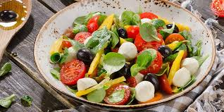

Cardápio
Entradas
- Saladas: Alface, rúcula, tomate, cenoura, pepino, beterraba, palmito - R$ 15,00
- Aperitivos: Pão de alho - R$ 12,00 | Queijo coalho - R$ 14,00 | Linguiça - R$ 18,00 | Picanha na chapa - R$ 22,00
- Molhos: Vinagrete, chimichurri, molho barbecue, maionese de alho - R$ 8,00 cada
Carnes
- --CARNES BOVINAS
- Picanha - R$ 35,00 / 100g
- Alcatra - R$ 30,00 / 100g
- Maminha - R$ 28,00 / 100g
- Fraldinha - R$ 32,00 / 100g
- Contrafilé - R$ 27,00 / 100g
- Costela de boi - R$ 25,00 / 100g
- Cupim - R$ 26,00 / 100g
- --CARNES SUÍNAS
- Costela suína - R$ 25,00 / 100g
- Pernil - R$ 22,00 / 100g
- Lombo suíno - R$ 23,00 / 100g
- Linguiça toscana - R$ 20,00 / 100g
- Linguiça calabresa - R$ 20,00 / 100g
- --AVES
- Asa de frango - R$ 18,00 / 100g
- Coração de frango - R$ 20,00 / 100g
- Coxa e sobrecoxa - R$ 22,00 / 100g
- --CORTES ESPECIAIS
- Bife ancho - R$ 40,00 / 100g
- T-bone - R$ 45,00 / 100g
- Prime rib - R$ 48,00 / 100g
- Tomahawk - R$ 50,00 / 100g
Acompanhamentos
- Arroz branco - R$ 10,00
- Arroz carreteiro - R$ 15,00
- Feijão tropeiro - R$ 18,00
- Farofa - R$ 10,00
- Mandioca frita - R$ 12,00
- Batata frita - R$ 15,00
- Queijo assado - R$ 14,00
- Pão de alho - R$ 10,00
Bebidas
- Sem Álcool:
- Refrigerantes - R$ 8,00
- Sucos naturais - R$ 12,00
- Com Álcool:
- Cervejas - R$ 12,00
- Vinhos - a partir de R$ 80,00
- Caipirinha - R$ 18,00
- Coquetéis variados - R$ 20,00
Sobremesas
- Pudim de leite - R$ 12,00
- Mousse de chocolate - R$ 12,00
- Quindim - R$ 10,00
- Manjar com calda de ameixa - R$ 12,00
- Frutas da estação - R$ 8,00



.jpg)
Sobre Nós
A Churrascaria Brasa Baiana foi fundada em 2022 para oferecer o melhor sabor da culinária baiana. Nosso compromisso é com a qualidade, atendimento e a satisfação dos nossos clientes.
Contato
Instagram: @brasabaiana_
WhatsApp: (77) 99933-8662
Telefone Fixo: (77) 3441-7518 | (77) 3441-6676